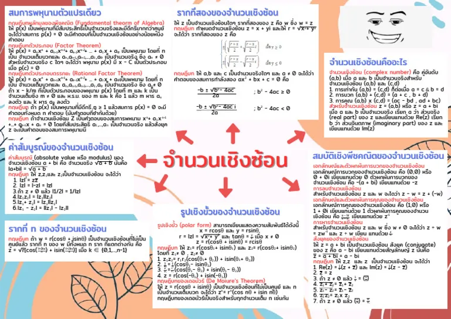

จำนวนเชิงซ้อน

จำนวนเชิงซ้อนเป็นจำนวนที่สามารถเขียนได้ในรูป a + bi โดย a และ b เป็นจำนวนจริง และ i เป็นหน่วยจินตภาพที่มีสมบัติ i² = -1 จำนวนเชิงซ้อนเกิดขึ้นจากความต้องการแก้สมการบางประเภทที่ไม่สามารถหาคำตอบในระบบจำนวนจริงได้ จำนวนเชิงซ้อนประกอบด้วยส่วนจริงและส่วนจินตภาพ และสามารถนำมาบวก ลบ คูณ และหารกันได้ นอกจากนี้ยังสามารถแสดงจำนวนเชิงซ้อนบนระนาบเชิงซ้อน ซึ่งประกอบด้วยแกนจริงและแกนจินตภาพ การศึกษาจำนวนเชิงซ้อนช่วยให้เข้าใจแนวคิดเกี่ยวกับจำนวนในรูปแบบที่กว้างขึ้น และสามารถนำไปประยุกต์ใช้ในการแก้สมการ รวมถึงใช้เป็นพื้นฐานในคณิตศาสตร์ระดับสูงและสาขาวิทยาศาสตร์บางด้าน